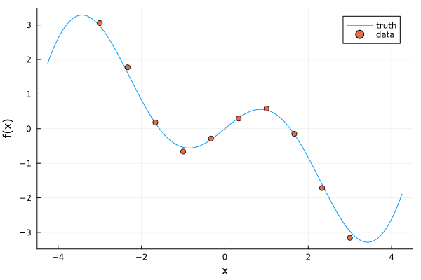
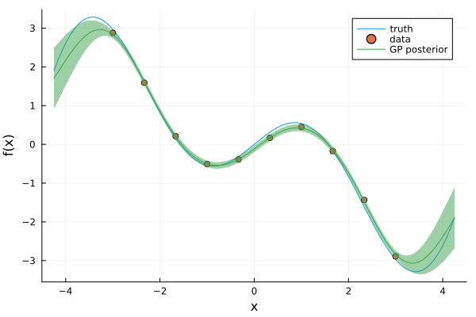
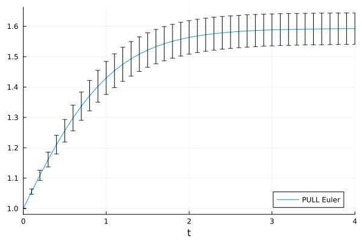

Trajectory Uncertainty

You are seeing the HTML output generated by Documenter.jl and Literate.jl from the Julia source file. The corresponding notebook can be viewed in nbviewer.
When the vector field $\dot{x} = f(x)$ is given by a Gaussian process, we have uncertainty in the vector field, which we can lift to the trajectory. In this example we show how to use the approximate PULL solvers, introduced in this paper, to propagate this uncertainty.
The implementation of the PULL solvers is still in progress. Z.
Setup
using GPDiffEq
using PlotsDefining a simple GP
In this example we sample the vector field values directly instead of learning them from a trajectory.
ts = range(-4.25, 4.252; length=100)
f(x) = x * cos(x)
X = range(-3.0, 3.0; length=10)
σ_n = 0.1
y = f.(X) .+ σ_n * randn(length(X))
p = plot(ts, f.(ts); label="truth", xlabel="x", ylabel="f(x)")
scatter!(p, X, y; label="data")
With this data, we define the GP.
ker = SqExponentialKernel()
gp = GP(ker)
fx = gp(X, σ_n^2)
fp = posterior(fx, y)
plot!(p, ts, mean(fp, ts); ribbons=sqrt.(var(fp, ts)), label="GP posterior")
A GPODE problem
We define a GPODEProblem with the GP as the vector field.
ff = GPODEFunction(fp)
prob = GPODEProblem(ff, 1.0, (0.0, 4.0))GPODEProblem with uType Float64 and tType Float64. In-place: false
timespan: (0.0, 4.0)
u0: 1.0and integrate with the PULL Euler solver.
sol = solve(prob, PULLEuler(); dt=0.1)
plot(sol; label="PULL Euler", legend=:bottomright)
This page was generated using Literate.jl.